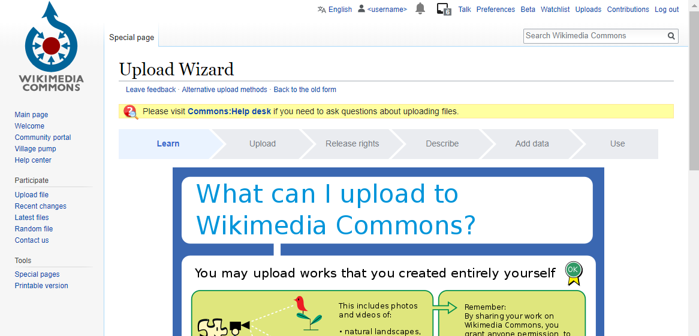
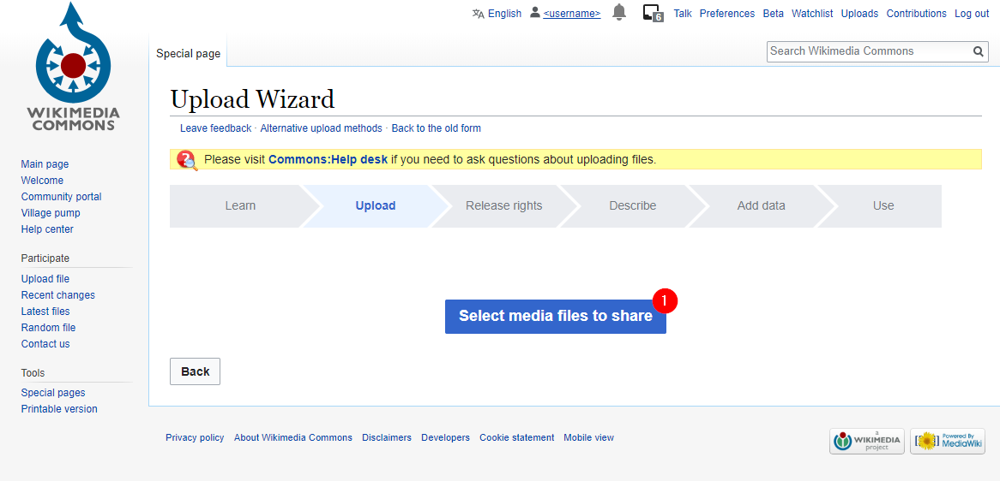
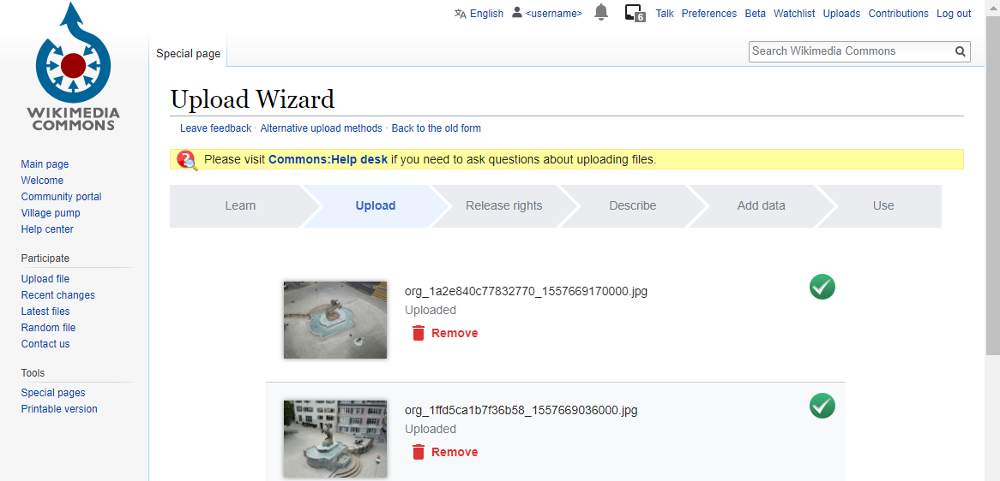
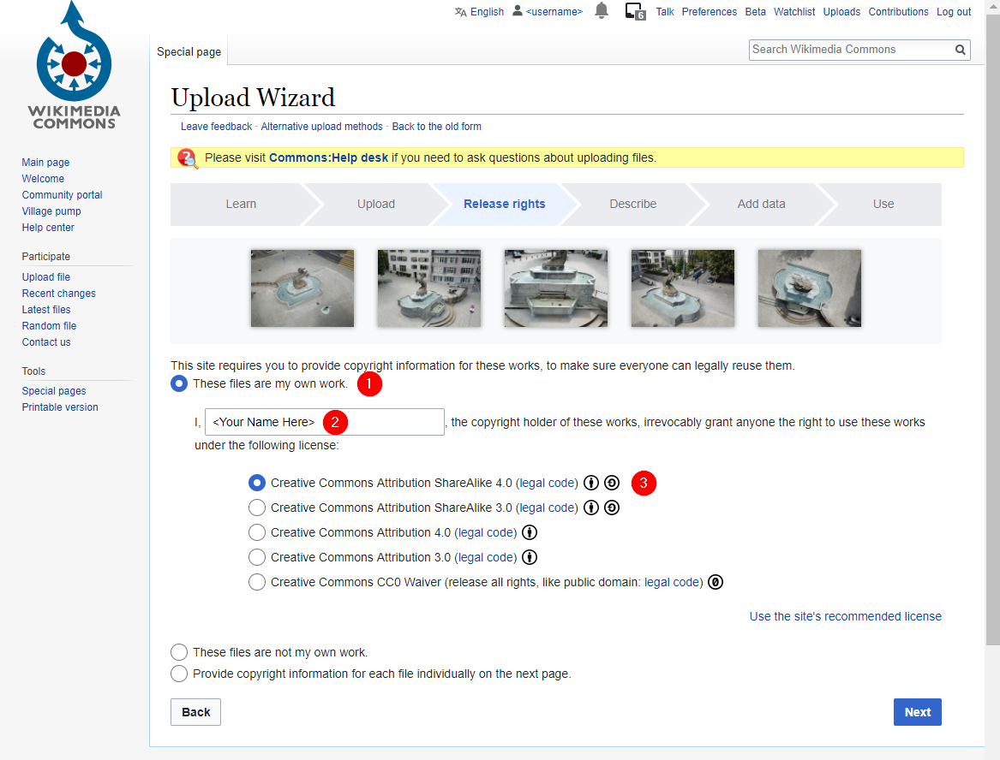
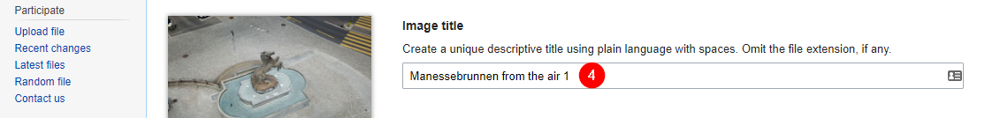
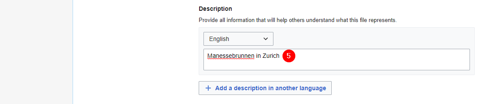
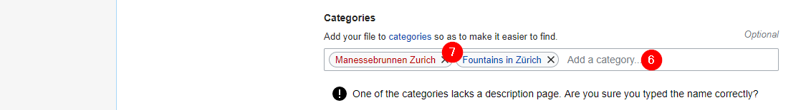
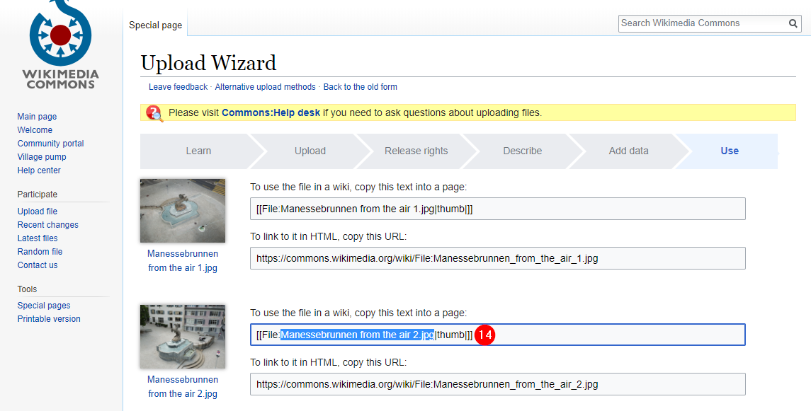
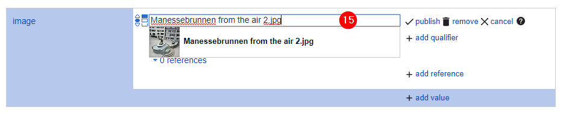
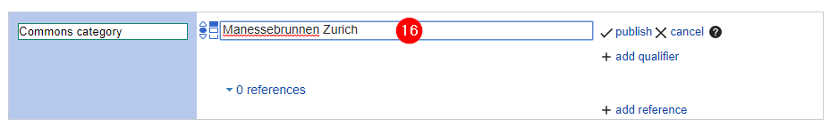

This guide explains how to add an image or multiple images to a fountain.
Take a look at the chart to find out what you are allowed to upload to Wikimedia Commons.
It is possible to upload multiple photos at once (CTRL + click on Windows).
When you are finished uploading your images, press "Continue" to provide the copyright and information for each image.
1. Confirm that the images are your own work.
2. Enter your full name for the copyright statement.
3. Select the license you wish to release your images under.
4. Enter a unique and descriptive filename for each image.
5. Enter a short description for each image.
6. Enter categories for each image by searching in the text box and selecting from the search results. If you have multiple images of a single fountain, then you should assign the images to a category dedicated to that fountain.
7. To create a new cateogry, write a descriptive category name in English, e.g. "Manessebrunnen Zurich" and hit Enter. Then click on the red link that appears.

8. Read the instructions for creating a new category if this is the first time. 9. Make sure that the category you are creating does not already exist. 10. Write a short description for the fountain that the category represents. 11. Publish the page to finish creating the category.
(optional) Provide location where the image was taken. If the image contains the location data as metadata, this will be read automatically.
Associate each file to the wikidata fountain item it represents.
12. For each file, enter the Wikidata QID of the fountain represented.
{{(fountain | async).properties.id_wikidata.value}}13. Publish your changes.
You will now see a list of all the images published.
14. Identify the image you wish to use as main image for the fountain and take note of the file name. The file name does NOT include the "File:" prefix.
Open the Wikidata fountain item.
15. To set the main image for the fountain, create an "image" statement and provide the filename as value.
16. To the fountain to the category created, create an "Commons category" statement and provide the category name as value.
To make the changes visible in the water-fountains app, force a reprocessing of the fountain.